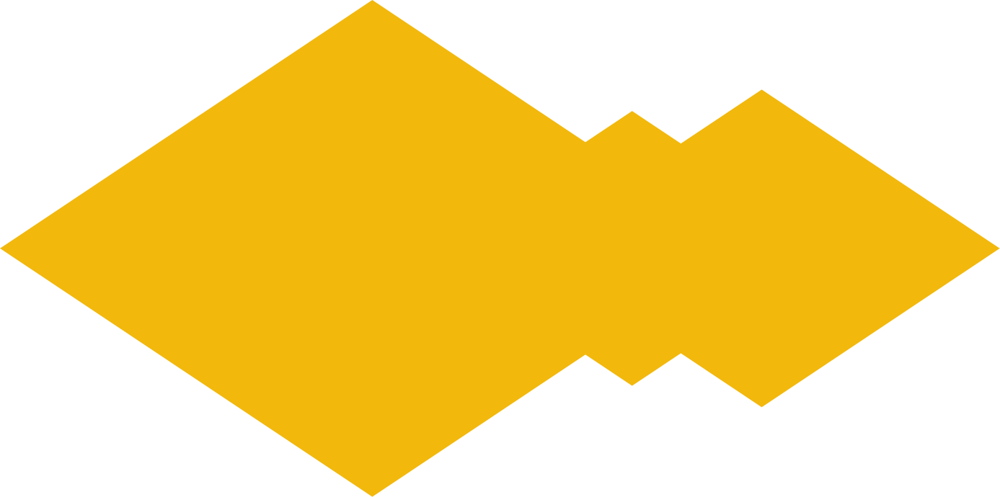

Vi tilbyr kurs innen ulike kunstneriske fag og materialer - blant annet
tekstil, akvarell, tre og glass.
Kursets varighet og nivå kan tilpasses etter behov, og vi kan også
arrangere flere verkstedsstasjoner samtidig for å ta imot større
grupper.
Dette er en inspirerende og sosial måte å styrke samholdet på - perfekt
for teambuilding, vennegjenger eller kolleger som ønsker en kreativ
opplevelse sammen. Vi kommer gjerne til deres kontor eller lokale og
forvandler det til et levende, kreativt rom - fullt av farger, idéer og
skaperglede. Vi snakker norsk, ukrainsk og engelsk.
Ta gjerne kontakt med oss for å bestille et skreddersydd opplegg!

Kontakt oss